import numpy as np
import pandas as pd
import os
import json
import requests
import shutil
import matplotlib.pyplot as plt
import seaborn as sns
from sklearn.preprocessing import normalize
import plotly.express as px
from _cde_compute_edges_from_nodes import *
pd.set_option('display.max_columns', None)
pd.set_option('display.max_rows', None)
# suppress warnings
import warnings
warnings.filterwarnings("ignore")Distance Analysis: bonemarrow-codex-chop
Analyze and visualize cell-to-nearest-endothelial-cell distance distributions for the
bonemarrow-codex-chop dataset.
basepath = "/u/yashjain/hra-cell-distance-analysis/data"
dataset_dir = "bonemarrow-codex-chop"
data_filedir = os.path.join("data-processed-nodes-with-harmonized-cell-types", dataset_dir)
output_edge_dir = os.path.join("data-processed-edges", dataset_dir)
figures_output_dir = "generated-figures"# Function to load your data
def load_data(path, edges=False):
if edges:
column_names = ['cell_id', 'x1', 'y1', 'z1', 'x2', 'y2', 'z2']
data = pd.read_csv(path, header=None, names=column_names)
else:
data = pd.read_csv(path)
return data# Function to read all files ending with "-nodes.csv" in the `data_filedir` directory into a single DataFrame.
# Another additional column `Dataset` is added to identify the dataset name which comes from the filename before the `-nodes.csv` suffix.
# Additionally, function reads all files ending with "-edges.csv" in the `output_edge_dir` directory into a single DataFrame.
# Three additional columns are added "Dataset", "Anchor Cell Type", and "Anchor Cell Type Level" to identify the dataset name, anchor cell type, and anchor cell type level respectively which come from the filename before the `.csv` suffix.
# The three additional columns are created by splitting the filename on the `-` character, and extracting the relevant parts.
# On splitting, the first part is the dataset name, second part is the anchor cell type level, and third part is the anchor cell type, and last part is the `edges` suffix.
# When reading files, check if the file has the correct format (i.e., ends with `-edges.csv`).
# Additionally, the function merges the edges DataFrame with the nodes DataFrame to get the cell type information for the anchor cells.
# This is done by reading the corresponding nodes file from the `data_filedir` directory for each edges file, and merging it with the edges DataFrame on the `cell_id` column.
# The merged DataFrame contains the edges with additional columns for the cell type information.
# The function returns three DataFrames:
# 1. `merged_nodes`: DataFrame containing all nodes with an additional column `Dataset`.
# 2. `merged_edges`: DataFrame containing all edges with additional columns `Dataset`, `Anchor Cell Type`, and `Anchor Cell Type Level`.
# 3. `merged_nodes_for_all_edges`: DataFrame containing all edges with additional columns `Dataset`, `Anchor Cell Type`, `Anchor Cell Type Level`, and the cell type information for cells.
def read_all_edge_datasets(basepath, data_filedir, output_edge_dir):
all_nodes_files = []
all_edges_files = []
all_nodes_edges_files = []
for file in os.listdir(os.path.join(basepath, output_edge_dir)):
if file.endswith("-edges.csv"):
file_path = os.path.join(basepath, output_edge_dir, file)
dataset_name, anchor_cell_type_level, anchor_cell_type = file.replace("-edges.csv", "").split('-')
edges_df = load_data(file_path, edges=False)
edges_df['Dataset'] = dataset_name
edges_df['Anchor Cell Type'] = anchor_cell_type
edges_df['Anchor Cell Type Level'] = anchor_cell_type_level
edges_df.rename(columns={"distance": "Distance"}, inplace=True) # Rename column "distance" to "Distance".
all_edges_files.append(edges_df)
# Read the corresponding nodes file from data_filedir to get the cell type information
nodes_file_path = os.path.join(basepath, data_filedir, f"{dataset_name}-nodes.csv")
nodes_df = load_data(nodes_file_path)
nodes_df['Dataset'] = dataset_name
all_nodes_files.append(nodes_df)
# Add a new 'cell_id' column to nodes_df
nodes_df['cell_id'] = range(len(nodes_df))
# Set 'cell_id' column as index for nodes_df
nodes_df.set_index('cell_id', inplace=True)
# Merge edges_df with nodes_df to get the cell type information for the anchor cells
edges_nodes_df = pd.merge(edges_df, nodes_df[['Level Three Cell Type', 'Level Two Cell Type', 'Level One Cell Type']], how='left', left_on='cell_id', right_index=True)
all_nodes_edges_files.append(edges_nodes_df)
merged_edges = pd.concat(all_edges_files, ignore_index=True)
merged_nodes = pd.concat(all_nodes_files, ignore_index=True)
merged_nodes_for_all_edges = pd.concat(all_nodes_edges_files, ignore_index=True)
return merged_nodes, merged_edges, merged_nodes_for_all_edgesdef create_directory(directory):
if not os.path.exists(directory):
os.makedirs(directory)
print(f"Directory '{directory}' created successfully.")
else:
print(f"Directory '{directory}' already exists.")Get initial statistics and identify endothelial cell categories for dataset.
df_all_nodes, df_all_edges, df_all_edges_with_cell_types = read_all_edge_datasets(basepath, data_filedir, output_edge_dir)df_all_nodes.head(5)| x | y | Original Cell Type | Level Three Cell Type | Level Three CL Label | Level Three CL ID | CL_Match/3 | Level Two Cell Type | Level Two CL Label | Level Two CL ID | CL_Match/2 | Level One Cell Type | Level One CL Label | Level One CL ID | CL_Match/1 | Dataset | |
|---|---|---|---|---|---|---|---|---|---|---|---|---|---|---|---|---|
| 0 | 5776.546667 | 4000.546667 | Erythroid | erythroid lineage cell | erythroid lineage cell | CL:0000764 | skos:exactMatch | erythroid precursor | erythroid progenitor cell | CL:0000038 | skos:exactMatch | hematopoietic precursor cell | hematopoietic precursor cell | CL:0008001 | skos:exactMatch | SB67_NBM48_NSM1_1720 |
| 1 | 6406.298077 | 4001.134615 | B-Cells | b cell | B cell | CL:0000236 | skos:exactMatch | b cell | B cell | CL:0000236 | skos:exactMatch | immune cell | leukocyte | CL:0000738 | skos:exactMatch | SB67_NBM48_NSM1_1720 |
| 2 | 6805.010526 | 4000.701754 | Erythroid | erythroid lineage cell | erythroid lineage cell | CL:0000764 | skos:exactMatch | erythroid precursor | erythroid progenitor cell | CL:0000038 | skos:exactMatch | hematopoietic precursor cell | hematopoietic precursor cell | CL:0008001 | skos:exactMatch | SB67_NBM48_NSM1_1720 |
| 3 | 6032.794326 | 4002.039007 | AEC | endothelial cell of artery | endothelial cell of artery | CL:1000413 | skos:exactMatch | endothelial cell of artery | endothelial cell of artery | CL:1000413 | skos:exactMatch | endothelial cell | endothelial cell | CL:0000115 | skos:exactMatch | SB67_NBM48_NSM1_1720 |
| 4 | 6159.116364 | 4001.763636 | Early Myeloid Progenitor | myeloid progenitor cell:common | common myeloid progenitor | CL:0000049 | skos:exactMatch | progenitor cell | hematopoietic precursor cell | CL:0008001 | skos:exactMatch | hematopoietic precursor cell | hematopoietic precursor cell | CL:0008001 | skos:exactMatch | SB67_NBM48_NSM1_1720 |
# Print the total number of unique cell types per dataset. Compute separately for each cell type column (Level One Cell Type, Level Two Cell Type, Level Three Cell Type, Original Cell Type).
print("Total number of unique cell types per cell type annnotation level:")
unique_cell_types = {
'Original Cell Type': df_all_nodes['Original Cell Type'].nunique(),
'Level Three Cell Type': df_all_nodes['Level Three Cell Type'].nunique(),
'Level Two Cell Type': df_all_nodes['Level Two Cell Type'].nunique(),
'Level One Cell Type': df_all_nodes['Level One Cell Type'].nunique()
}
for cell_type, count in unique_cell_types.items():
print(f"{cell_type}: {count}")Total number of unique cell types per cell type annnotation level:
Original Cell Type: 37
Level Three Cell Type: 33
Level Two Cell Type: 22
Level One Cell Type: 6# Save the unique cell types containing "endothelial" in name per cell type column (Level One Cell Type, Level Two Cell Type, Level Three Cell Type, Original Cell Type) to a dictionary where the key is the level and the value is a list of unique cell types.
endothelial_cell_types = {
'Original Cell Type': df_all_nodes[df_all_nodes['Original Cell Type'].str.contains("endothelial", case=False, na=False)]['Original Cell Type'].unique().tolist(),
'Level Three Cell Type': df_all_nodes[df_all_nodes['Level Three Cell Type'].str.contains("endothelial", case=False, na=False)]['Level Three Cell Type'].unique().tolist(),
'Level Two Cell Type': df_all_nodes[df_all_nodes['Level Two Cell Type'].str.contains("endothelial", case=False, na=False)]['Level Two Cell Type'].unique().tolist(),
'Level One Cell Type': df_all_nodes[df_all_nodes['Level One Cell Type'].str.contains("endothelial", case=False, na=False)]['Level One Cell Type'].unique().tolist()
}
print("\nEndothelial cell types per cell type annotation level:")
for level, cell_types in endothelial_cell_types.items():
print(f"\n{level}:")
for cell in cell_types:
print(f" - {cell}")
Endothelial cell types per cell type annotation level:
Original Cell Type:
Level Three Cell Type:
- endothelial cell of artery
- endothelial cell of sinusoid
Level Two Cell Type:
- endothelial cell of artery
- endothelial cell of sinusoid
Level One Cell Type:
- endothelial celltype_field_list = ["Level Three Cell Type", "Level Two Cell Type", "Level One Cell Type"] # Skipping Original Cell Type as it is not a hierarchical level.
# Define the anchor cell type (type of endothelial cell) for each level in type_field_list based on available categories in the previous cell. The distance analysis at all three levels will be limited to the specified anchor cell type.
anchor_cell_type_dict = {
'Level Three Cell Type': 'endothelial cell of sinusoid', # Picking sinusoid instead of artery because the cell count of sinusoid is higher than artery in the dataset.
'Level Two Cell Type': 'endothelial cell of sinusoid',
'Level One Cell Type': 'endothelial cell'
}Process datasets to add region information to Nodes files.
# Print unique values in Dataset column as a list.
print("\nUnique values in Dataset column:")
print(df_all_edges['Dataset'].unique().tolist())
Unique values in Dataset column:
['SB67_NBM48_NSM1_1720', 'SB67_NBM49_NSM2_1086', 'SB67_NBM47_NSM3_1996', 'SB67_NBM51_AML1_183', 'SB67_NBM46_AML1_382', 'SB67_NBM44_AML2_191', 'SB67_NBM52_AML3_1329', 'SB67_NBM54_AML3_1443', 'SB67_NBM27_H10', 'SB67_NBM28_H14', 'SB67_NBM36_H26', 'SB67_NBM41_H27', 'SB67_NBM31_H32', 'SB67_NBM38_H33', 'SB67_NBM37_H35', 'SB67_NBM33_H36', 'SB67_NBM32_H37', 'SB67_NBM34_H38', 'SB67_NBM40_H39', 'SB67_NBM39_H41']# Create a dictionary to map bone marrow regions to correct region names (conditions).
# AML = Acute Myeloid Leukemia
# NSM = Negative lymphoma Staging bone Marrow biopsies
# NBM = Normal Bone Marrow
region_map = {
'SB67_NBM48_NSM1_1720': 'NSM',
'SB67_NBM49_NSM2_1086': 'NSM',
'SB67_NBM47_NSM3_1996': 'NSM',
'SB67_NBM51_AML1_183': 'AML',
'SB67_NBM46_AML1_382': 'AML',
'SB67_NBM44_AML2_191': 'AML',
'SB67_NBM52_AML3_1329': 'AML',
'SB67_NBM54_AML3_1443': 'AML',
'SB67_NBM27_H10': 'NBM',
'SB67_NBM28_H14': 'NBM',
'SB67_NBM36_H26': 'NBM',
'SB67_NBM41_H27': 'NBM',
'SB67_NBM31_H32': 'NBM',
'SB67_NBM38_H33': 'NBM',
'SB67_NBM37_H35': 'NBM',
'SB67_NBM33_H36': 'NBM',
'SB67_NBM32_H37': 'NBM',
'SB67_NBM34_H38': 'NBM',
'SB67_NBM40_H39': 'NBM',
'SB67_NBM39_H41': 'NBM'
}df_all_nodes.head()| x | y | Original Cell Type | Level Three Cell Type | Level Three CL Label | Level Three CL ID | CL_Match/3 | Level Two Cell Type | Level Two CL Label | Level Two CL ID | CL_Match/2 | Level One Cell Type | Level One CL Label | Level One CL ID | CL_Match/1 | Dataset | |
|---|---|---|---|---|---|---|---|---|---|---|---|---|---|---|---|---|
| 0 | 5776.546667 | 4000.546667 | Erythroid | erythroid lineage cell | erythroid lineage cell | CL:0000764 | skos:exactMatch | erythroid precursor | erythroid progenitor cell | CL:0000038 | skos:exactMatch | hematopoietic precursor cell | hematopoietic precursor cell | CL:0008001 | skos:exactMatch | SB67_NBM48_NSM1_1720 |
| 1 | 6406.298077 | 4001.134615 | B-Cells | b cell | B cell | CL:0000236 | skos:exactMatch | b cell | B cell | CL:0000236 | skos:exactMatch | immune cell | leukocyte | CL:0000738 | skos:exactMatch | SB67_NBM48_NSM1_1720 |
| 2 | 6805.010526 | 4000.701754 | Erythroid | erythroid lineage cell | erythroid lineage cell | CL:0000764 | skos:exactMatch | erythroid precursor | erythroid progenitor cell | CL:0000038 | skos:exactMatch | hematopoietic precursor cell | hematopoietic precursor cell | CL:0008001 | skos:exactMatch | SB67_NBM48_NSM1_1720 |
| 3 | 6032.794326 | 4002.039007 | AEC | endothelial cell of artery | endothelial cell of artery | CL:1000413 | skos:exactMatch | endothelial cell of artery | endothelial cell of artery | CL:1000413 | skos:exactMatch | endothelial cell | endothelial cell | CL:0000115 | skos:exactMatch | SB67_NBM48_NSM1_1720 |
| 4 | 6159.116364 | 4001.763636 | Early Myeloid Progenitor | myeloid progenitor cell:common | common myeloid progenitor | CL:0000049 | skos:exactMatch | progenitor cell | hematopoietic precursor cell | CL:0008001 | skos:exactMatch | hematopoietic precursor cell | hematopoietic precursor cell | CL:0008001 | skos:exactMatch | SB67_NBM48_NSM1_1720 |
# Iterate through the df_all_data dataframe to create new column "Unique Region" based on the "Dataset" column.
# The "Unique Region" column is created by mapping the region names based on the full dataset name.
df_all_nodes['Unique Region'] = df_all_nodes['Dataset'].map(region_map)
# df_all_nodes['Unique Region'] = df_all_nodes['Dataset'].str.split('-').str[1].map(region_map)
# Check if the new columns are created correctly.
df_all_nodes[['Dataset', 'Unique Region']].head(5)| Dataset | Unique Region | |
|---|---|---|
| 0 | SB67_NBM48_NSM1_1720 | NSM |
| 1 | SB67_NBM48_NSM1_1720 | NSM |
| 2 | SB67_NBM48_NSM1_1720 | NSM |
| 3 | SB67_NBM48_NSM1_1720 | NSM |
| 4 | SB67_NBM48_NSM1_1720 | NSM |
# Print all unique regions in the data.
print("\nUnique Regions in the data:")
print(df_all_nodes['Unique Region'].unique())
# Print the total number of unique regions.
print(f"Total number of unique regions: {df_all_nodes['Unique Region'].nunique()}")
# Print number of unique datasets per unique region.
print("\nNumber of unique datasets per unique region:")
for region in df_all_nodes['Unique Region'].unique():
num_datasets = df_all_nodes[df_all_nodes['Unique Region'] == region]['Dataset'].nunique()
print(f"{region}: {num_datasets}")
Unique Regions in the data:
['NSM' 'AML' 'NBM']
Total number of unique regions: 3
Number of unique datasets per unique region:
NSM: 3
AML: 5
NBM: 12Process datasets to add region information to Edges files.
df_all_edges.head(5)| cell_id | x1 | y1 | z1 | x2 | y2 | z2 | Distance | Dataset | Anchor Cell Type | Anchor Cell Type Level | |
|---|---|---|---|---|---|---|---|---|---|---|---|
| 0 | 1117 | 5746.650000 | 4541.361111 | 0 | 5895.403361 | 4573.613445 | 0 | 152.209644 | SB67_NBM48_NSM1_1720 | endothelial cell of artery | Level Three Cell Type |
| 1 | 1145 | 5734.788679 | 4551.400000 | 0 | 5895.403361 | 4573.613445 | 0 | 162.143496 | SB67_NBM48_NSM1_1720 | endothelial cell of artery | Level Three Cell Type |
| 2 | 1151 | 5756.300000 | 4553.104348 | 0 | 5895.403361 | 4573.613445 | 0 | 140.607141 | SB67_NBM48_NSM1_1720 | endothelial cell of artery | Level Three Cell Type |
| 3 | 1185 | 5746.238095 | 4563.619048 | 0 | 5895.403361 | 4573.613445 | 0 | 149.499714 | SB67_NBM48_NSM1_1720 | endothelial cell of artery | Level Three Cell Type |
| 4 | 1268 | 5624.227027 | 4594.664865 | 0 | 5541.917031 | 4700.170306 | 0 | 133.814549 | SB67_NBM48_NSM1_1720 | endothelial cell of artery | Level Three Cell Type |
# Process the edge data to create new columns "Unique Region" based on the "Dataset" column, similar to how it was done for the node data.
df_all_edges['Unique Region'] = df_all_edges['Dataset'].map(region_map)
# Check if the new columns are created correctly.
df_all_edges[['Dataset', 'Unique Region']].head(5)| Dataset | Unique Region | |
|---|---|---|
| 0 | SB67_NBM48_NSM1_1720 | NSM |
| 1 | SB67_NBM48_NSM1_1720 | NSM |
| 2 | SB67_NBM48_NSM1_1720 | NSM |
| 3 | SB67_NBM48_NSM1_1720 | NSM |
| 4 | SB67_NBM48_NSM1_1720 | NSM |
# Print all unique regions in the data.
print("\nUnique Regions in the data:")
print(df_all_edges['Unique Region'].unique())
# Print the total number of unique regions.
print(f"Total number of unique regions: {df_all_edges['Unique Region'].nunique()}")
# Print number of unique datasets per unique region.
print("\nNumber of unique datasets per unique region:")
for region in df_all_edges['Unique Region'].unique():
num_datasets = df_all_edges[df_all_edges['Unique Region'] == region]['Dataset'].nunique()
print(f"{region}: {num_datasets}")
Unique Regions in the data:
['NSM' 'AML' 'NBM']
Total number of unique regions: 3
Number of unique datasets per unique region:
NSM: 3
AML: 5
NBM: 12df_all_edges_with_cell_types['Unique Region'] = df_all_edges_with_cell_types['Dataset'].map(region_map)
# Check if the new columns are created correctly.
df_all_edges_with_cell_types[['Dataset', 'Unique Region']].head(5)| Dataset | Unique Region | |
|---|---|---|
| 0 | SB67_NBM48_NSM1_1720 | NSM |
| 1 | SB67_NBM48_NSM1_1720 | NSM |
| 2 | SB67_NBM48_NSM1_1720 | NSM |
| 3 | SB67_NBM48_NSM1_1720 | NSM |
| 4 | SB67_NBM48_NSM1_1720 | NSM |
df_all_nodes.head(1)| x | y | Original Cell Type | Level Three Cell Type | Level Three CL Label | Level Three CL ID | CL_Match/3 | Level Two Cell Type | Level Two CL Label | Level Two CL ID | CL_Match/2 | Level One Cell Type | Level One CL Label | Level One CL ID | CL_Match/1 | Dataset | Unique Region | |
|---|---|---|---|---|---|---|---|---|---|---|---|---|---|---|---|---|---|
| 0 | 5776.546667 | 4000.546667 | Erythroid | erythroid lineage cell | erythroid lineage cell | CL:0000764 | skos:exactMatch | erythroid precursor | erythroid progenitor cell | CL:0000038 | skos:exactMatch | hematopoietic precursor cell | hematopoietic precursor cell | CL:0008001 | skos:exactMatch | SB67_NBM48_NSM1_1720 | NSM |
df_all_edges.head(1)| cell_id | x1 | y1 | z1 | x2 | y2 | z2 | Distance | Dataset | Anchor Cell Type | Anchor Cell Type Level | Unique Region | |
|---|---|---|---|---|---|---|---|---|---|---|---|---|
| 0 | 1117 | 5746.65 | 4541.361111 | 0 | 5895.403361 | 4573.613445 | 0 | 152.209644 | SB67_NBM48_NSM1_1720 | endothelial cell of artery | Level Three Cell Type | NSM |
df_all_edges_with_cell_types.head(1)| cell_id | x1 | y1 | z1 | x2 | y2 | z2 | Distance | Dataset | Anchor Cell Type | Anchor Cell Type Level | Level Three Cell Type | Level Two Cell Type | Level One Cell Type | Unique Region | |
|---|---|---|---|---|---|---|---|---|---|---|---|---|---|---|---|
| 0 | 1117 | 5746.65 | 4541.361111 | 0 | 5895.403361 | 4573.613445 | 0 | 152.209644 | SB67_NBM48_NSM1_1720 | endothelial cell of artery | Level Three Cell Type | erythroid lineage cell | erythroid precursor | hematopoietic precursor cell | NSM |
Node Analysis
# Plot number of cells per cell type in the same plot. Color by cell type and unique region. Output figure saved in existing `figures_output_dir`.
def plot_cells_per_celltype(df, type_field, output_dir):
plt.figure(figsize=(20, 8))
plt.rcParams["svg.fonttype"] = 'none' # to store text as text, not as path
sns.countplot(data=df, x=type_field, palette='Spectral', hue='Unique Region')
plt.title(f'Number of Cells per {type_field} in `{dataset_dir}`')
plt.xticks(rotation=90)
plt.tight_layout()
plt.savefig(os.path.join(output_dir, f'{dataset_dir}_cells_per_celltype_{type_field}.png'), dpi=300,
bbox_inches='tight',
pad_inches=0.5)
plt.savefig(os.path.join(output_dir, f'{dataset_dir}_cells_per_celltype_{type_field}.svg'), dpi=300,
bbox_inches='tight',
pad_inches=0.5)
plt.legend(title='Unique Region', bbox_to_anchor=(0.85, 1), loc='upper left')
plt.xlabel(type_field)
# For numbers on y-axis, do not use scientific notation.
plt.ticklabel_format(style='plain', axis='y')
# Set y-axis label
plt.ylabel('Number of Cells')
plt.grid(axis='y', linestyle='--', alpha=0.7)
plt.tight_layout()
# Show the plot
plt.show()
plt.close()
for type_field in type_field_list:
plot_cells_per_celltype(df_all_nodes, type_field, os.path.join(basepath, figures_output_dir))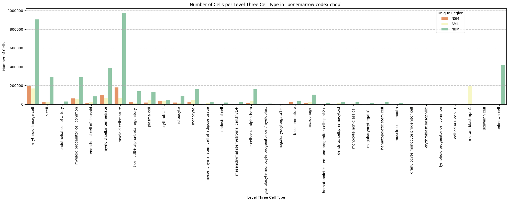
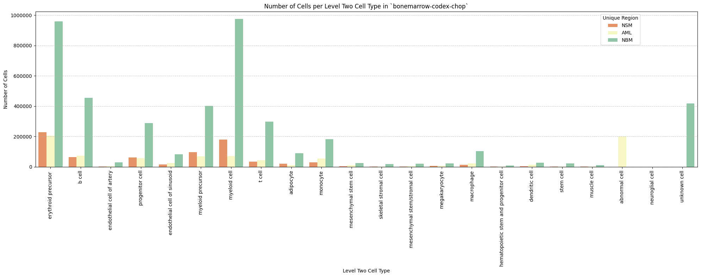
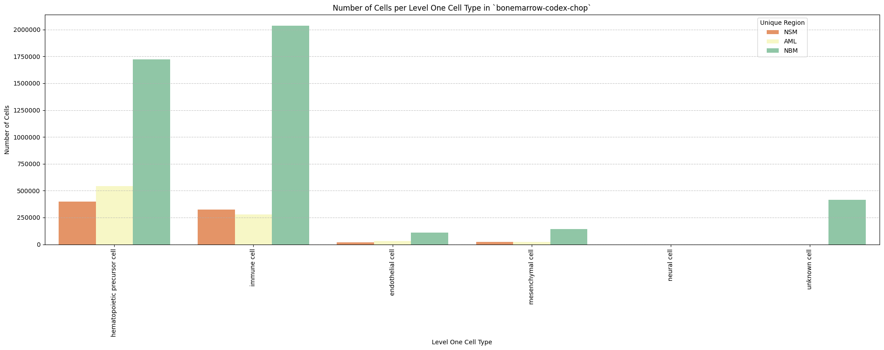
Distance Analysis
# Get mean, median, minimum, maximum distance per unique region per anchor cell type.
df_distance_stats = df_all_edges_with_cell_types.groupby(['Unique Region', 'Anchor Cell Type', 'Anchor Cell Type Level']).agg(
mean_distance=('Distance', 'mean'),
median_distance=('Distance', 'median'),
min_distance=('Distance', 'min'),
max_distance=('Distance', 'max')
).reset_index()
# Print the first few rows of the distance statistics DataFrame.
df_distance_stats| Unique Region | Anchor Cell Type | Anchor Cell Type Level | mean_distance | median_distance | min_distance | max_distance | |
|---|---|---|---|---|---|---|---|
| 0 | AML | endothelial cell | Level One Cell Type | 74.382151 | 66.806253 | 6.056625 | 199.988548 |
| 1 | AML | endothelial cell of artery | Level Three Cell Type | 111.758598 | 112.688440 | 8.275107 | 199.997878 |
| 2 | AML | endothelial cell of artery | Level Two Cell Type | 111.758598 | 112.688440 | 8.275107 | 199.997878 |
| 3 | AML | endothelial cell of sinusoid | Level Three Cell Type | 79.390329 | 72.177834 | 6.056625 | 199.988548 |
| 4 | AML | endothelial cell of sinusoid | Level Two Cell Type | 79.390329 | 72.177834 | 6.056625 | 199.988548 |
| 5 | NBM | endothelial cell | Level One Cell Type | 90.322695 | 85.240398 | 5.750231 | 199.999142 |
| 6 | NBM | endothelial cell of artery | Level Three Cell Type | 115.284424 | 119.163665 | 5.750231 | 199.999998 |
| 7 | NBM | endothelial cell of artery | Level Two Cell Type | 115.284424 | 119.163665 | 5.750231 | 199.999998 |
| 8 | NBM | endothelial cell of sinusoid | Level Three Cell Type | 95.298876 | 91.351118 | 7.165130 | 199.999142 |
| 9 | NBM | endothelial cell of sinusoid | Level Two Cell Type | 95.298876 | 91.351118 | 7.165130 | 199.999142 |
| 10 | NSM | endothelial cell | Level One Cell Type | 93.842789 | 87.951406 | 7.675593 | 199.997910 |
| 11 | NSM | endothelial cell of artery | Level Three Cell Type | 117.211880 | 121.868198 | 8.340683 | 199.999051 |
| 12 | NSM | endothelial cell of artery | Level Two Cell Type | 117.211880 | 121.868198 | 8.340683 | 199.999051 |
| 13 | NSM | endothelial cell of sinusoid | Level Three Cell Type | 95.636834 | 90.176577 | 7.675593 | 199.997910 |
| 14 | NSM | endothelial cell of sinusoid | Level Two Cell Type | 95.636834 | 90.176577 | 7.675593 | 199.997910 |
Level One Cell Type Analysis
# Get mean, median, minimum, maximum distance per cell type in all unique regions.
cell_type_level = 'Level One Cell Type'
df_all_edges_with_cell_type_level = df_all_edges_with_cell_types[(df_all_edges_with_cell_types['Anchor Cell Type Level'] == cell_type_level) & (df_all_edges_with_cell_types['Anchor Cell Type'] == anchor_cell_type_dict[cell_type_level])]
df_distance_stats_cell_type_level = df_all_edges_with_cell_type_level.groupby([cell_type_level, 'Unique Region']).agg(
mean_distance=('Distance', 'mean'),
median_distance=('Distance', 'median'),
min_distance=('Distance', 'min'),
max_distance=('Distance', 'max')
).reset_index()
df_distance_stats_cell_type_level| Level One Cell Type | Unique Region | mean_distance | median_distance | min_distance | max_distance | |
|---|---|---|---|---|---|---|
| 0 | hematopoietic precursor cell | AML | 75.807458 | 68.350787 | 6.056625 | 199.982016 |
| 1 | hematopoietic precursor cell | NBM | 91.437465 | 86.347062 | 7.368943 | 199.999142 |
| 2 | hematopoietic precursor cell | NSM | 95.233485 | 89.641506 | 8.036234 | 199.985663 |
| 3 | immune cell | AML | 72.244373 | 64.713204 | 8.247845 | 199.988548 |
| 4 | immune cell | NBM | 89.656605 | 84.596595 | 5.750231 | 199.998770 |
| 5 | immune cell | NSM | 93.334766 | 87.175896 | 7.675593 | 199.997383 |
| 6 | mesenchymal cell | AML | 68.072424 | 59.045392 | 8.275107 | 198.703670 |
| 7 | mesenchymal cell | NBM | 82.079626 | 75.429180 | 7.596170 | 199.992343 |
| 8 | mesenchymal cell | NSM | 79.140648 | 69.671854 | 8.344688 | 199.997910 |
| 9 | neural cell | AML | 79.843632 | 79.843632 | 61.290397 | 98.396868 |
| 10 | neural cell | NBM | 57.869702 | 49.944344 | 9.815320 | 187.956746 |
| 11 | unknown cell | NBM | 91.914579 | 87.038869 | 6.586107 | 199.984000 |
# Get top five and bottom five cell types with respect to mean distance in each unique region separately.
def get_top_bottom_cell_types_by_mean(df, cell_type_level, unique_region, top_n=5):
# Filter the DataFrame for the specified unique region and cell type level
df_filtered = df[df['Unique Region'] == unique_region]
# Group by the specified cell type level and calculate mean distance
df_grouped = df_filtered.groupby(cell_type_level).agg(mean_distance=('Distance', 'mean')).reset_index()
# Sort by mean distance to get top and bottom cell types
df_sorted = df_grouped.sort_values(by='mean_distance', ascending=False)
# Get top N and bottom N cell types
top_cell_types = df_sorted.head(top_n)
bottom_cell_types = df_sorted.tail(top_n)
return top_cell_types, bottom_cell_types
# Get top and bottom cell types for each unique region in the dataset.
unique_regions = df_all_edges_with_cell_type_level['Unique Region'].unique()
for region in unique_regions:
top_bottom = get_top_bottom_cell_types_by_mean(df_all_edges_with_cell_type_level, cell_type_level, region)
print(f"\nTop 5 cell types in {region}:")
print(top_bottom[0])
print(f"\nBottom 5 cell types in {region}:")
print(top_bottom[1])
Top 5 cell types in NSM:
Level One Cell Type mean_distance
0 hematopoietic precursor cell 95.233485
1 immune cell 93.334766
2 mesenchymal cell 79.140648
Bottom 5 cell types in NSM:
Level One Cell Type mean_distance
0 hematopoietic precursor cell 95.233485
1 immune cell 93.334766
2 mesenchymal cell 79.140648
Top 5 cell types in AML:
Level One Cell Type mean_distance
3 neural cell 79.843632
0 hematopoietic precursor cell 75.807458
1 immune cell 72.244373
2 mesenchymal cell 68.072424
Bottom 5 cell types in AML:
Level One Cell Type mean_distance
3 neural cell 79.843632
0 hematopoietic precursor cell 75.807458
1 immune cell 72.244373
2 mesenchymal cell 68.072424
Top 5 cell types in NBM:
Level One Cell Type mean_distance
4 unknown cell 91.914579
0 hematopoietic precursor cell 91.437465
1 immune cell 89.656605
2 mesenchymal cell 82.079626
3 neural cell 57.869702
Bottom 5 cell types in NBM:
Level One Cell Type mean_distance
4 unknown cell 91.914579
0 hematopoietic precursor cell 91.437465
1 immune cell 89.656605
2 mesenchymal cell 82.079626
3 neural cell 57.869702# Get top five and bottom five cell types with respect to median distance in each unique region separately.
def get_top_bottom_cell_types_by_median(df, cell_type_level, unique_region, top_n=5):
# Filter the DataFrame for the specified unique region and cell type level
df_filtered = df[df['Unique Region'] == unique_region]
# Group by the specified cell type level and calculate median distance
df_grouped = df_filtered.groupby(cell_type_level).agg(median_distance=('Distance', 'median')).reset_index()
# Sort by median distance to get top and bottom cell types
df_sorted = df_grouped.sort_values(by='median_distance', ascending=False)
# Get top N and bottom N cell types
top_cell_types = df_sorted.head(top_n)
bottom_cell_types = df_sorted.tail(top_n)
return top_cell_types, bottom_cell_types
# Get top and bottom cell types for each unique region in the dataset.
unique_regions = df_all_edges_with_cell_type_level['Unique Region'].unique()
for region in unique_regions:
top_bottom = get_top_bottom_cell_types_by_median(df_all_edges_with_cell_type_level, cell_type_level, region)
print(f"\nTop 5 cell types in {region}:")
print(top_bottom[0])
print(f"\nBottom 5 cell types in {region}:")
print(top_bottom[1])
Top 5 cell types in NSM:
Level One Cell Type median_distance
0 hematopoietic precursor cell 89.641506
1 immune cell 87.175896
2 mesenchymal cell 69.671854
Bottom 5 cell types in NSM:
Level One Cell Type median_distance
0 hematopoietic precursor cell 89.641506
1 immune cell 87.175896
2 mesenchymal cell 69.671854
Top 5 cell types in AML:
Level One Cell Type median_distance
3 neural cell 79.843632
0 hematopoietic precursor cell 68.350787
1 immune cell 64.713204
2 mesenchymal cell 59.045392
Bottom 5 cell types in AML:
Level One Cell Type median_distance
3 neural cell 79.843632
0 hematopoietic precursor cell 68.350787
1 immune cell 64.713204
2 mesenchymal cell 59.045392
Top 5 cell types in NBM:
Level One Cell Type median_distance
4 unknown cell 87.038869
0 hematopoietic precursor cell 86.347062
1 immune cell 84.596595
2 mesenchymal cell 75.429180
3 neural cell 49.944344
Bottom 5 cell types in NBM:
Level One Cell Type median_distance
4 unknown cell 87.038869
0 hematopoietic precursor cell 86.347062
1 immune cell 84.596595
2 mesenchymal cell 75.429180
3 neural cell 49.944344# Calculate regional variability
def calculate_regional_variability(df_all_edges_with_cell_type_level, cell_type_level):
""" Calculate regional variability for distances in the given DataFrame.
"""
regional_variability = df_all_edges_with_cell_type_level.groupby('Unique Region')['Distance'].agg([
('mean', 'mean'),
('std', 'std')
]).round(2)
# Add CV as percentage
regional_variability['CV (%)'] = (regional_variability['std'] / regional_variability['mean'] * 100).round(1)
print("\nRegional Variability Analysis:")
print("Mean: Average distance in each region")
print("Std: Standard deviation of distances")
print("CV: Coefficient of Variation (std/mean * 100%)")
print(regional_variability)
# Calculate variability for each cell type
cell_type_variability = df_all_edges_with_cell_type_level.groupby(cell_type_level)['Distance'].agg([
('mean', 'mean'),
('std', 'std')
]).round(2)
# Add CV as percentage
cell_type_variability['CV (%)'] = (cell_type_variability['std'] / cell_type_variability['mean'] * 100).round(1)
print("\nCell Type Variability Analysis (sorted by CV):")
print(cell_type_variability.sort_values('CV (%)', ascending=False))
calculate_regional_variability(df_all_edges_with_cell_type_level, cell_type_level)
Regional Variability Analysis:
Mean: Average distance in each region
Std: Standard deviation of distances
CV: Coefficient of Variation (std/mean * 100%)
mean std CV (%)
Unique Region
AML 74.38 42.82 57.6
NBM 90.32 48.07 53.2
NSM 93.84 50.99 54.3
Cell Type Variability Analysis (sorted by CV):
mean std CV (%)
Level One Cell Type
neural cell 58.71 38.97 66.4
mesenchymal cell 79.84 49.34 61.8
immune cell 88.12 48.41 54.9
hematopoietic precursor cell 88.63 47.43 53.5
unknown cell 91.91 48.28 52.5# Define the standard region sequence for plots
regions = ['NBM', 'AML', 'NSM']# Generate Violin Plot
def plot_violin_cells_per_celltype(df_all_edges_with_cell_type_level, cell_type_level, output_dir, density_norm='area'):
sns.set_style("whitegrid")
sns.set_context("notebook", rc={"grid.linewidth": 2})
plt.figure(figsize=(10, 6))
plt.rcParams["svg.fonttype"] = 'none' # to store text as text, not as path
sns.violinplot(data=df_all_edges_with_cell_type_level, x=cell_type_level, y="Distance", density_norm=density_norm, common_norm=True, cut=0, inner="box", split=False, palette='Spectral', alpha=.9)
sns.set_theme(style="whitegrid")
sns.set_context("paper")
font_size = 10
plt.legend(fontsize=font_size)
plt.title(f'Violin Plot of distances by {cell_type_level} (Density Normalization: {density_norm})', fontsize=font_size)
plt.xlabel(f'{cell_type_level}', fontsize=font_size)
plt.ylabel('Distance (\u03bcm)', fontsize=font_size)
# Increase font size for all text in the figure
plt.xticks(fontsize=font_size)
plt.xticks(rotation=90)
plt.yticks(fontsize=font_size)
plt.tight_layout()
plt.savefig(os.path.join(output_dir, f'{dataset_dir}_violin_cells_per_celltype_{cell_type_level}.png'), dpi=300,
bbox_inches='tight',
pad_inches=0.5)
plt.savefig(os.path.join(output_dir, f'{dataset_dir}_violin_cells_per_celltype_{cell_type_level}.svg'), dpi=300,
bbox_inches='tight',
pad_inches=0.5)
plt.show()
plot_violin_cells_per_celltype(df_all_edges_with_cell_type_level, cell_type_level, os.path.join(basepath, figures_output_dir), density_norm='area')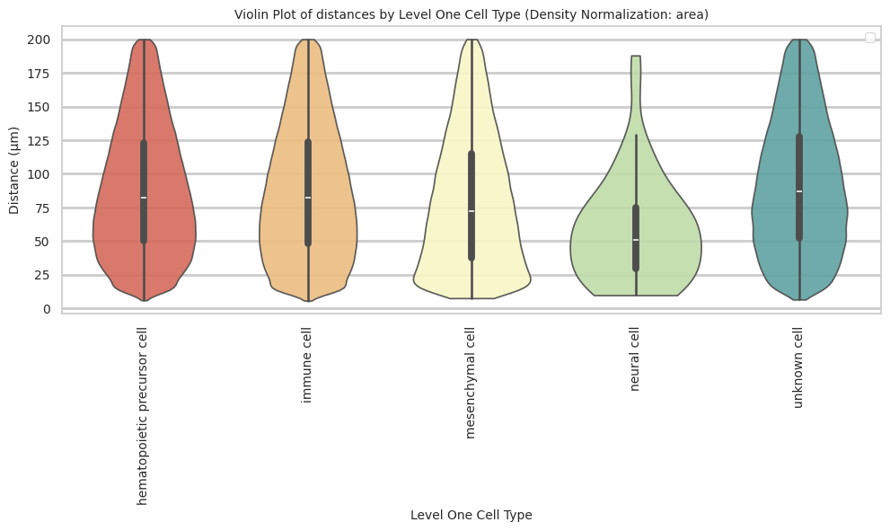
# Boxplots of distribution of distances by cell type and region.
def plot_distance_distribution_boxplots_by_region(df_all_edges_with_cell_type_level, cell_type_level, output_dir):
plt.figure(figsize=(16, 8))
plt.rcParams["svg.fonttype"] = 'none' # to store text as text, not as path
# Create categorical type with only the regions that exist in the data
available_regions = [r for r in regions if r in df_all_edges_with_cell_type_level['Unique Region'].unique()]
df_all_edges_with_cell_type_level['Unique Region'] = pd.Categorical(
df_all_edges_with_cell_type_level['Unique Region'],
categories=available_regions,
ordered=True
)
# Make box plot.
sns.boxplot(data=df_all_edges_with_cell_type_level, x=cell_type_level, y='Distance', hue='Unique Region', showfliers=False, palette='Spectral') # viridis or Spectral palette for better color distinction
font_size = 10
plt.xticks(rotation=90, ha='right', fontsize=font_size)
plt.yticks(fontsize=font_size)
plt.title(f'Distribution of distances by {cell_type_level} and region', fontsize=font_size)
plt.xlabel(f'{cell_type_level}', fontsize=font_size)
plt.ylabel('Distance (\u03bcm)', fontsize=font_size)
plt.legend(bbox_to_anchor=(1, 1), loc='upper left')
plt.tight_layout()
plt.savefig(os.path.join(output_dir, f'{dataset_dir}_distance_distribution_boxplots_by_region_{cell_type_level}.png'), dpi=300,
bbox_inches='tight',
pad_inches=0.5)
plt.savefig(os.path.join(output_dir, f'{dataset_dir}_distance_distribution_boxplots_by_region_{cell_type_level}.svg'), dpi=300,
bbox_inches='tight',
pad_inches=0.5)
plt.show()
plot_distance_distribution_boxplots_by_region(df_all_edges_with_cell_type_level, cell_type_level, os.path.join(basepath, figures_output_dir))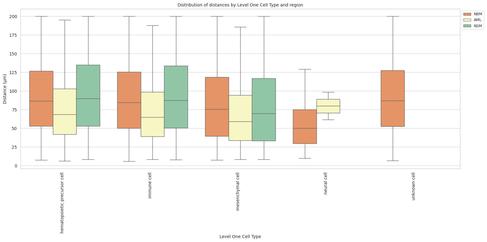
# Boxplots of distribution of distances by cell type and region.
def plot_distance_distribution_heatmap(df_all_edges_with_cell_type_level, cell_type_level, output_dir):
pivot_data = df_all_edges_with_cell_type_level.pivot_table(
values='Distance',
index=cell_type_level,
columns='Unique Region',
aggfunc='median'
)
plt.figure(figsize=(15, 10))
plt.rcParams["svg.fonttype"] = 'none' # to store text as text, not as path
sns.heatmap(pivot_data, annot=True, fmt='.1f', cmap='Spectral')
plt.title(f'Heatmap of median distances by {cell_type_level}', fontsize=12)
font_size = 10
plt.xticks(rotation=90, ha='right', fontsize=font_size)
plt.yticks(fontsize=font_size)
plt.xlabel('Unique Region', fontsize=font_size)
plt.ylabel(f'{cell_type_level}', fontsize=font_size)
plt.tight_layout()
plt.savefig(os.path.join(output_dir, f'{dataset_dir}_distance_distribution_heatmap_{cell_type_level}.png'), dpi=300,
bbox_inches='tight',
pad_inches=0.5)
plt.savefig(os.path.join(output_dir, f'{dataset_dir}_distance_distribution_heatmap_{cell_type_level}.svg'), dpi=300,
bbox_inches='tight',
pad_inches=0.5)
plt.show()
plot_distance_distribution_heatmap(df_all_edges_with_cell_type_level, cell_type_level, os.path.join(basepath, figures_output_dir))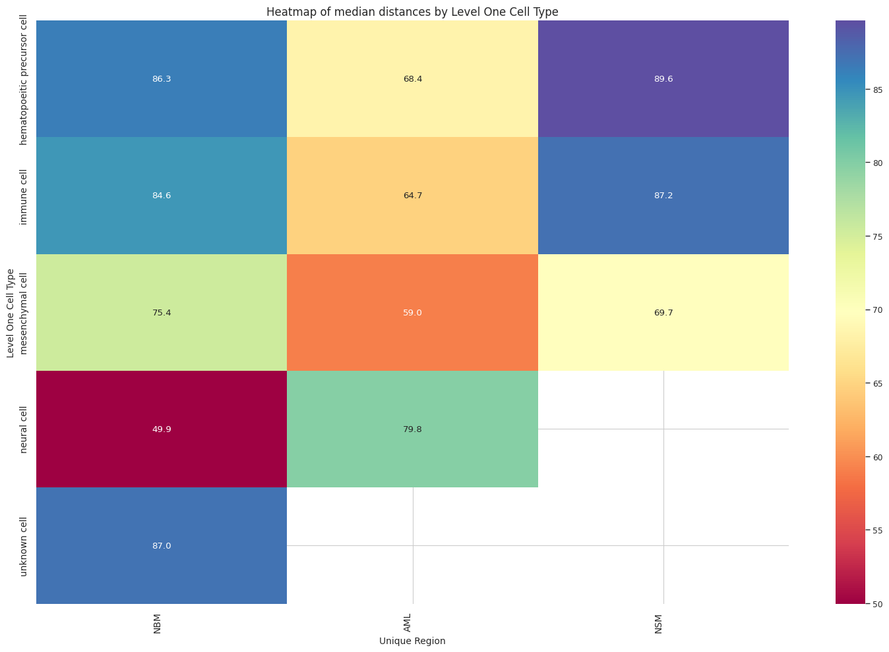
# Generate Violin Plot per unique region in both small intestine and large intestine. Create for all 8 regions as 8 subplots.
def plot_violin_plots_all_regions(df_all_edges_with_cell_type_level, cell_type_level, output_dir, density_norm="area"):
sns.set_style("whitegrid")
sns.set_context("notebook", rc={"grid.linewidth": 1})
plt.rcParams["svg.fonttype"] = 'none' # to store text as text, not as path
font_size = 10
fig, axs = plt.subplots(3, 1, figsize=(10, 15)) # Adjusted figsize for horizontal layout
fig.suptitle(f'Distance distribution per {cell_type_level} in `{dataset_dir}` (density normalization = {density_norm})', fontsize=font_size, y=1)
# Keep the sequence of Cell Types consistent across plots.
cell_types = sorted(df_all_edges_with_cell_type_level[cell_type_level].unique())
# Create a color palette based on the number of unique classes
color_palette = sns.color_palette("Spectral", n_colors=len(cell_types))
# Create a dictionary mapping class to color
class_color_dict = dict(zip(cell_types, color_palette))
for i, region in enumerate(regions):
data_reg = df_all_edges_with_cell_type_level[df_all_edges_with_cell_type_level['Unique Region'] == region]
sns.violinplot(data=data_reg, x=cell_type_level, y="Distance", density_norm=density_norm, common_norm=True, cut=0, inner="box", split=False, palette=class_color_dict, alpha=.9, ax=axs[i], hue=cell_type_level, legend=False, order=cell_types, fill=True)
axs[i].set_title(region, fontsize=font_size)
axs[i].set_xlabel('', fontsize=font_size)
axs[i].set_ylabel('Distance (\u03bcm)', fontsize=font_size)
# axs[i].tick_params(axis='x', labelrotation=90, labelsize=font_size)
# only show xtick labels for the last subplot
if i < len(regions) - 1:
axs[i].set_xticklabels([])
else:
axs[i].set_xticklabels(cell_types, fontsize=font_size, rotation=90, ha='right')
# axs[i].set_ylim(0, data_reg['Distance'].max() * 1.1) # Set y-limits to be consistent across all plots
axs[i].tick_params(axis='both', labelsize=font_size)
# Use fig.text for precise label positioning
fig.figure.text(0.5, -0.02, f'{cell_type_level}', ha='center', va='bottom', fontsize=font_size)
plt.tight_layout()
plt.savefig(os.path.join(output_dir, f'{dataset_dir}_violin_plots_all_regions_{cell_type_level}.png'), dpi=300,
bbox_inches='tight',
pad_inches=0.5)
plt.savefig(os.path.join(output_dir, f'{dataset_dir}_violin_plots_all_regions_{cell_type_level}.svg'), dpi=300,
bbox_inches='tight',
pad_inches=0.5)
plt.show()
plot_violin_plots_all_regions(df_all_edges_with_cell_type_level, cell_type_level, os.path.join(basepath, figures_output_dir), density_norm="count") # density_norm="count" or "area" can be used based on preference.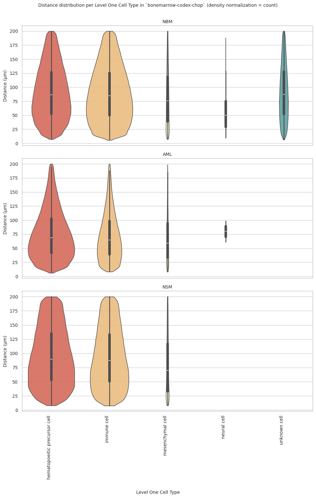
Level Two Cell Type Analysis
# Get mean, median, minimum, maximum distance per cell type in all unique regions.
cell_type_level = 'Level Two Cell Type'
df_all_edges_with_cell_type_level = df_all_edges_with_cell_types[(df_all_edges_with_cell_types['Anchor Cell Type Level'] == cell_type_level) & (df_all_edges_with_cell_types['Anchor Cell Type'] == anchor_cell_type_dict[cell_type_level])]
df_distance_stats_cell_type_level = df_all_edges_with_cell_type_level.groupby([cell_type_level, 'Unique Region']).agg(
mean_distance=('Distance', 'mean'),
median_distance=('Distance', 'median'),
min_distance=('Distance', 'min'),
max_distance=('Distance', 'max')
).reset_index()
df_distance_stats_cell_type_level| Level Two Cell Type | Unique Region | mean_distance | median_distance | min_distance | max_distance | |
|---|---|---|---|---|---|---|
| 0 | abnormal cell | AML | 84.612826 | 78.755366 | 7.350124 | 199.982016 |
| 1 | adipocyte | AML | 72.044065 | 61.569803 | 9.299294 | 198.520789 |
| 2 | adipocyte | NBM | 92.656243 | 88.435461 | 8.040248 | 199.992343 |
| 3 | adipocyte | NSM | 84.007363 | 76.639037 | 8.344688 | 199.997910 |
| 4 | b cell | AML | 78.392682 | 71.243188 | 9.244128 | 199.966621 |
| 5 | b cell | NBM | 97.615652 | 95.012793 | 8.025751 | 199.996640 |
| 6 | b cell | NSM | 96.232882 | 91.578635 | 9.240345 | 199.991504 |
| 7 | dendritic cell | AML | 79.071847 | 72.219946 | 9.452268 | 199.541677 |
| 8 | dendritic cell | NBM | 94.921339 | 90.375897 | 8.032959 | 199.978479 |
| 9 | dendritic cell | NSM | 96.121120 | 90.482325 | 10.456776 | 199.356229 |
| 10 | endothelial cell of artery | AML | 66.552461 | 57.188080 | 9.598652 | 197.775548 |
| 11 | endothelial cell of artery | NBM | 80.875474 | 71.598061 | 7.165130 | 199.696671 |
| 12 | endothelial cell of artery | NSM | 65.333875 | 55.348929 | 8.340683 | 199.496217 |
| 13 | erythroid precursor | AML | 75.974098 | 67.872764 | 7.687746 | 199.911019 |
| 14 | erythroid precursor | NBM | 95.055450 | 90.578380 | 7.368943 | 199.990928 |
| 15 | erythroid precursor | NSM | 97.332711 | 92.296305 | 8.124669 | 199.985663 |
| 16 | hematopoietic stem and progenitor cell | AML | 54.563528 | 37.139774 | 9.123395 | 189.847535 |
| 17 | hematopoietic stem and progenitor cell | NBM | 95.280715 | 93.347852 | 9.670863 | 199.738928 |
| 18 | hematopoietic stem and progenitor cell | NSM | 104.959083 | 98.965058 | 13.524865 | 196.588555 |
| 19 | macrophage | AML | 73.826747 | 67.164529 | 9.347675 | 198.307993 |
| 20 | macrophage | NBM | 96.799495 | 91.931956 | 8.152219 | 199.997797 |
| 21 | macrophage | NSM | 90.324484 | 82.094705 | 9.073456 | 199.512374 |
| 22 | megakaryocyte | AML | 77.991861 | 68.126728 | 9.953335 | 199.430617 |
| 23 | megakaryocyte | NBM | 98.795997 | 94.345559 | 8.774989 | 199.937106 |
| 24 | megakaryocyte | NSM | 98.796581 | 92.705512 | 12.087462 | 199.884221 |
| 25 | mesenchymal stem cell | AML | 78.724108 | 71.696786 | 8.585049 | 198.703670 |
| 26 | mesenchymal stem cell | NBM | 91.666993 | 87.259370 | 9.507509 | 199.986823 |
| 27 | mesenchymal stem cell | NSM | 87.206186 | 83.498779 | 9.652741 | 199.570947 |
| 28 | mesenchymal stem/stromal cell | AML | 75.223250 | 65.025012 | 10.898685 | 199.967713 |
| 29 | mesenchymal stem/stromal cell | NBM | 91.820716 | 86.924087 | 7.572935 | 199.852192 |
| 30 | mesenchymal stem/stromal cell | NSM | 91.464706 | 80.083330 | 10.301344 | 199.472893 |
| 31 | monocyte | AML | 82.273906 | 76.137286 | 8.868460 | 199.876784 |
| 32 | monocyte | NBM | 91.519407 | 86.756461 | 7.351953 | 199.985575 |
| 33 | monocyte | NSM | 92.240440 | 85.765454 | 8.268363 | 199.934336 |
| 34 | muscle cell | AML | 69.735721 | 59.183423 | 10.271701 | 194.082988 |
| 35 | muscle cell | NBM | 94.216885 | 87.575318 | 9.427550 | 199.834792 |
| 36 | muscle cell | NSM | 55.313443 | 46.465657 | 10.248018 | 198.935026 |
| 37 | myeloid cell | AML | 76.635516 | 68.660555 | 8.373370 | 199.748940 |
| 38 | myeloid cell | NBM | 93.908272 | 89.618397 | 7.514845 | 199.998770 |
| 39 | myeloid cell | NSM | 95.283475 | 89.390289 | 7.675593 | 199.984961 |
| 40 | myeloid precursor | AML | 80.963771 | 73.387438 | 8.604672 | 199.919874 |
| 41 | myeloid precursor | NBM | 96.919348 | 93.418496 | 7.505009 | 199.999142 |
| 42 | myeloid precursor | NSM | 97.037575 | 92.060765 | 8.173025 | 199.969054 |
| 43 | neuroglial cell | AML | 128.321993 | 128.321993 | 128.321993 | 128.321993 |
| 44 | neuroglial cell | NBM | 86.411262 | 78.933059 | 17.934662 | 175.871271 |
| 45 | progenitor cell | AML | 78.395834 | 70.509229 | 6.056625 | 199.797032 |
| 46 | progenitor cell | NBM | 98.953368 | 96.413601 | 8.000469 | 199.988637 |
| 47 | progenitor cell | NSM | 97.117247 | 92.464861 | 9.423956 | 199.969595 |
| 48 | skeletal stromal cell | AML | 78.238144 | 65.728809 | 13.246899 | 195.060591 |
| 49 | skeletal stromal cell | NBM | 94.062042 | 88.538574 | 8.954561 | 199.829571 |
| 50 | skeletal stromal cell | NSM | 89.169229 | 77.967966 | 11.309889 | 198.710354 |
| 51 | stem cell | AML | 70.097786 | 59.523007 | 10.801688 | 193.191236 |
| 52 | stem cell | NBM | 96.060575 | 92.318654 | 9.741716 | 199.970348 |
| 53 | stem cell | NSM | 92.740997 | 90.714633 | 8.036234 | 199.237795 |
| 54 | t cell | AML | 80.957774 | 73.440678 | 8.247845 | 199.988548 |
| 55 | t cell | NBM | 94.412441 | 90.318472 | 8.190426 | 199.995542 |
| 56 | t cell | NSM | 94.730211 | 88.963905 | 9.018322 | 199.997383 |
| 57 | unknown cell | NBM | 96.310960 | 92.693095 | 8.043118 | 199.984452 |
# Get top and bottom cell types for each unique region in the dataset.
unique_regions = df_all_edges_with_cell_type_level['Unique Region'].unique()
for region in unique_regions:
top_bottom = get_top_bottom_cell_types_by_mean(df_all_edges_with_cell_type_level, cell_type_level, region)
print(f"\nTop 5 cell types in {region}:")
print(top_bottom[0])
print(f"\nBottom 5 cell types in {region}:")
print(top_bottom[1])
Top 5 cell types in NSM:
Level Two Cell Type mean_distance
5 hematopoietic stem and progenitor cell 104.959083
7 megakaryocyte 98.796581
4 erythroid precursor 97.332711
14 progenitor cell 97.117247
13 myeloid precursor 97.037575
Bottom 5 cell types in NSM:
Level Two Cell Type mean_distance
15 skeletal stromal cell 89.169229
8 mesenchymal stem cell 87.206186
0 adipocyte 84.007363
3 endothelial cell of artery 65.333875
11 muscle cell 55.313443
Top 5 cell types in AML:
Level Two Cell Type mean_distance
15 neuroglial cell 128.321993
0 abnormal cell 84.612826
11 monocyte 82.273906
14 myeloid precursor 80.963771
19 t cell 80.957774
Bottom 5 cell types in AML:
Level Two Cell Type mean_distance
1 adipocyte 72.044065
18 stem cell 70.097786
12 muscle cell 69.735721
4 endothelial cell of artery 66.552461
6 hematopoietic stem and progenitor cell 54.563528
Top 5 cell types in NBM:
Level Two Cell Type mean_distance
15 progenitor cell 98.953368
7 megakaryocyte 98.795997
1 b cell 97.615652
13 myeloid precursor 96.919348
6 macrophage 96.799495
Bottom 5 cell types in NBM:
Level Two Cell Type mean_distance
9 mesenchymal stem/stromal cell 91.820716
8 mesenchymal stem cell 91.666993
10 monocyte 91.519407
14 neuroglial cell 86.411262
3 endothelial cell of artery 80.875474# Get top and bottom cell types for each unique region in the dataset.
unique_regions = df_all_edges_with_cell_type_level['Unique Region'].unique()
for region in unique_regions:
top_bottom = get_top_bottom_cell_types_by_median(df_all_edges_with_cell_type_level, cell_type_level, region)
print(f"\nTop 5 cell types in {region}:")
print(top_bottom[0])
print(f"\nBottom 5 cell types in {region}:")
print(top_bottom[1])
Top 5 cell types in NSM:
Level Two Cell Type median_distance
5 hematopoietic stem and progenitor cell 98.965058
7 megakaryocyte 92.705512
14 progenitor cell 92.464861
4 erythroid precursor 92.296305
13 myeloid precursor 92.060765
Bottom 5 cell types in NSM:
Level Two Cell Type median_distance
9 mesenchymal stem/stromal cell 80.083330
15 skeletal stromal cell 77.967966
0 adipocyte 76.639037
3 endothelial cell of artery 55.348929
11 muscle cell 46.465657
Top 5 cell types in AML:
Level Two Cell Type median_distance
15 neuroglial cell 128.321993
0 abnormal cell 78.755366
11 monocyte 76.137286
19 t cell 73.440678
14 myeloid precursor 73.387438
Bottom 5 cell types in AML:
Level Two Cell Type median_distance
1 adipocyte 61.569803
18 stem cell 59.523007
12 muscle cell 59.183423
4 endothelial cell of artery 57.188080
6 hematopoietic stem and progenitor cell 37.139774
Top 5 cell types in NBM:
Level Two Cell Type median_distance
15 progenitor cell 96.413601
1 b cell 95.012793
7 megakaryocyte 94.345559
13 myeloid precursor 93.418496
5 hematopoietic stem and progenitor cell 93.347852
Bottom 5 cell types in NBM:
Level Two Cell Type median_distance
8 mesenchymal stem cell 87.259370
9 mesenchymal stem/stromal cell 86.924087
10 monocyte 86.756461
14 neuroglial cell 78.933059
3 endothelial cell of artery 71.598061calculate_regional_variability(df_all_edges_with_cell_type_level, cell_type_level)
Regional Variability Analysis:
Mean: Average distance in each region
Std: Standard deviation of distances
CV: Coefficient of Variation (std/mean * 100%)
mean std CV (%)
Unique Region
AML 79.39 44.80 56.4
NBM 95.30 48.83 51.2
NSM 95.64 51.03 53.4
Cell Type Variability Analysis (sorted by CV):
mean std CV (%)
Level Two Cell Type
endothelial cell of artery 77.69 52.16 67.1
muscle cell 87.24 50.87 58.3
skeletal stromal cell 92.68 52.72 56.9
adipocyte 89.36 50.19 56.2
monocyte 89.60 49.68 55.4
mesenchymal stem cell 87.59 48.55 55.4
mesenchymal stem/stromal cell 89.52 48.91 54.6
dendritic cell 89.61 48.91 54.6
t cell 92.82 49.73 53.6
hematopoietic stem and progenitor cell 93.87 49.72 53.0
myeloid cell 93.01 49.27 53.0
abnormal cell 84.61 44.08 52.1
erythroid precursor 92.48 48.09 52.0
myeloid precursor 94.87 49.06 51.7
stem cell 94.15 48.57 51.6
macrophage 92.25 47.60 51.6
b cell 94.91 48.86 51.5
progenitor cell 95.58 49.02 51.3
unknown cell 96.31 48.92 50.8
neuroglial cell 87.43 43.59 49.9
megakaryocyte 94.69 47.09 49.7plot_violin_cells_per_celltype(df_all_edges_with_cell_type_level, cell_type_level, os.path.join(basepath, figures_output_dir), density_norm='area')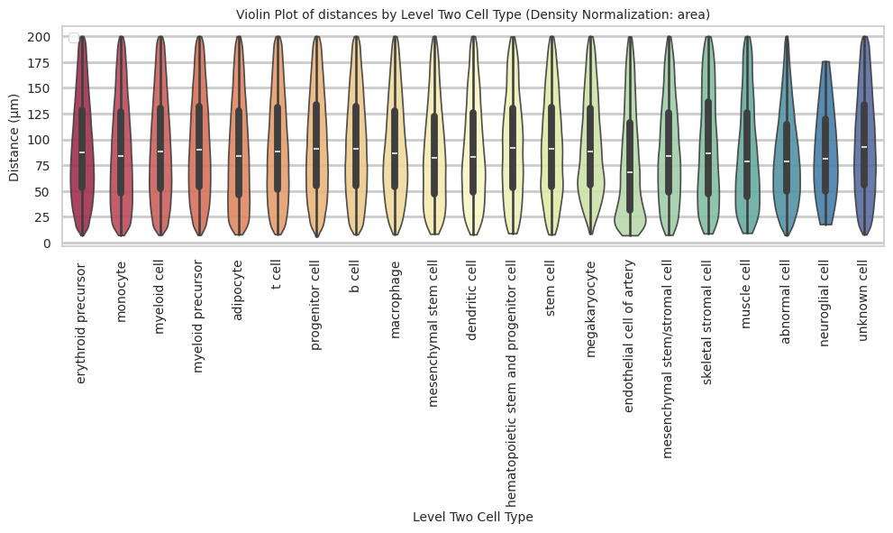
plot_distance_distribution_boxplots_by_region(df_all_edges_with_cell_type_level, cell_type_level, os.path.join(basepath, figures_output_dir))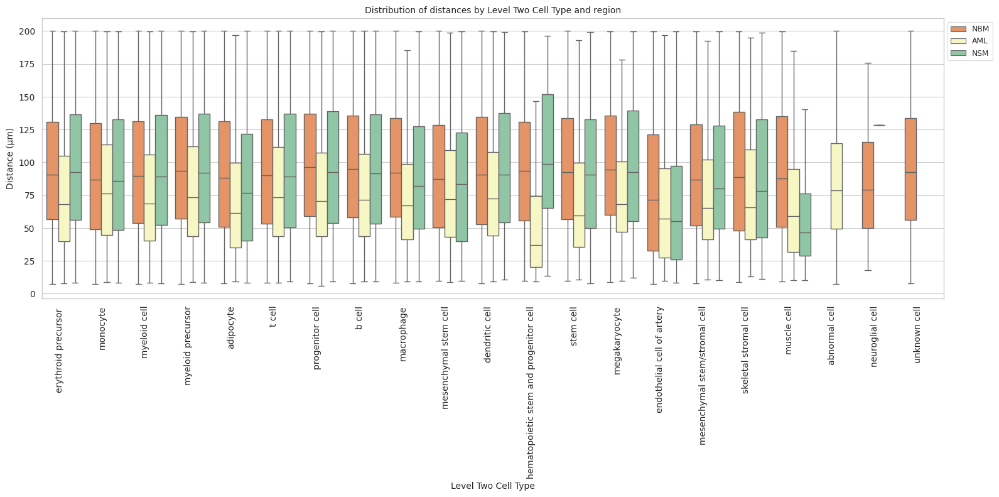
plot_distance_distribution_heatmap(df_all_edges_with_cell_type_level, cell_type_level, os.path.join(basepath, figures_output_dir))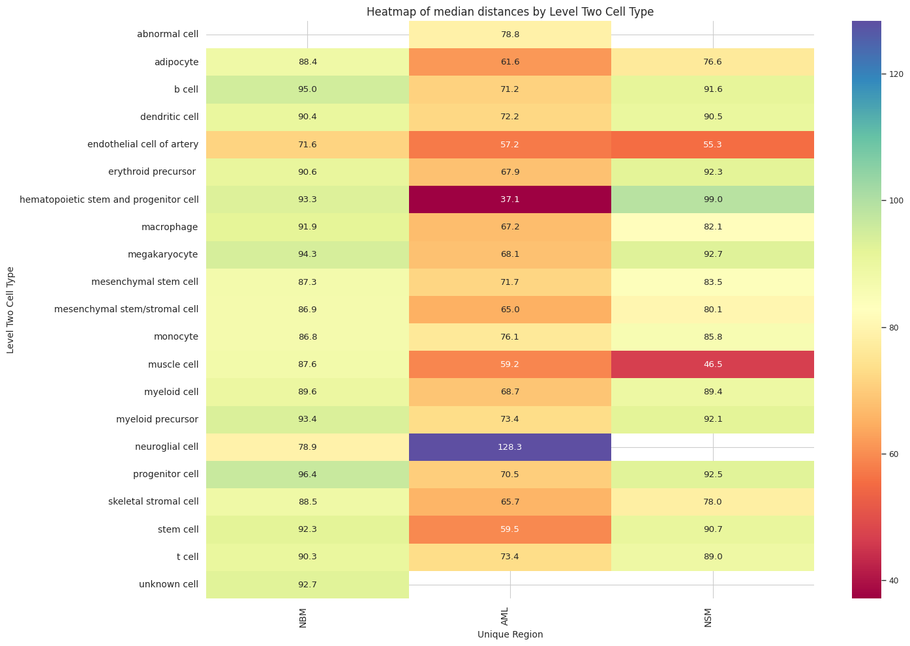
plot_violin_plots_all_regions(df_all_edges_with_cell_type_level, cell_type_level, os.path.join(basepath, figures_output_dir), density_norm="count") # Or, density_norm="count" or "area" based on preference.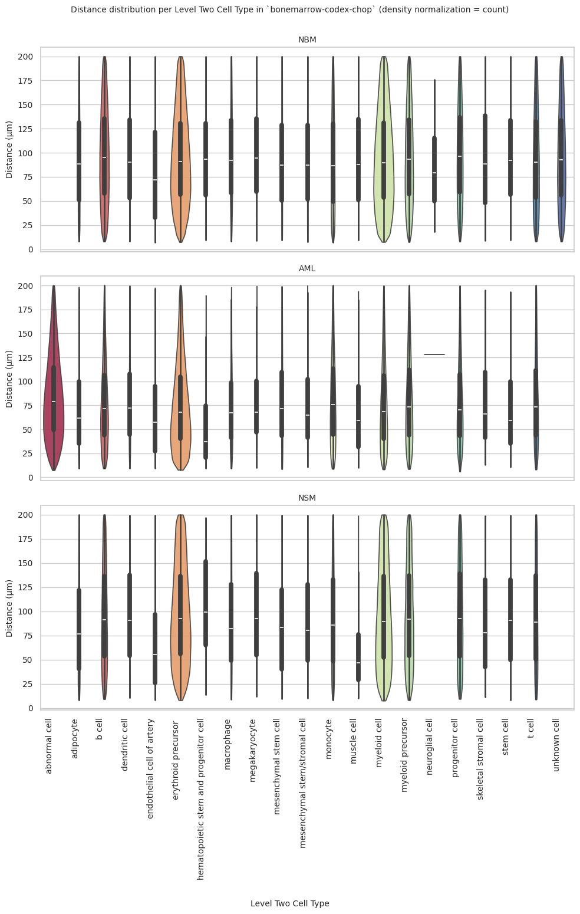
Level Three Cell Type Analysis
# Get mean, median, minimum, maximum distance per cell type in all unique regions.
cell_type_level = 'Level Three Cell Type'
df_all_edges_with_cell_type_level = df_all_edges_with_cell_types[(df_all_edges_with_cell_types['Anchor Cell Type Level'] == cell_type_level) & (df_all_edges_with_cell_types['Anchor Cell Type'] == anchor_cell_type_dict[cell_type_level])]
df_distance_stats_cell_type_level = df_all_edges_with_cell_type_level.groupby([cell_type_level, 'Unique Region']).agg(
mean_distance=('Distance', 'mean'),
median_distance=('Distance', 'median'),
min_distance=('Distance', 'min'),
max_distance=('Distance', 'max')
).reset_index()
df_distance_stats_cell_type_level| Level Three Cell Type | Unique Region | mean_distance | median_distance | min_distance | max_distance | |
|---|---|---|---|---|---|---|
| 0 | adipocyte | AML | 72.044065 | 61.569803 | 9.299294 | 198.520789 |
| 1 | adipocyte | NBM | 92.656243 | 88.435461 | 8.040248 | 199.992343 |
| 2 | adipocyte | NSM | 84.007363 | 76.639037 | 8.344688 | 199.997910 |
| 3 | b cell | AML | 76.143453 | 68.752778 | 9.244128 | 199.966621 |
| 4 | b cell | NBM | 96.138631 | 92.508923 | 8.025751 | 199.972480 |
| 5 | b cell | NSM | 94.707460 | 89.148689 | 9.240345 | 199.991504 |
| 6 | b cell:immature | AML | 82.461384 | 75.703532 | 10.072227 | 199.483659 |
| 7 | b cell:immature | NBM | 99.501175 | 96.731118 | 8.874948 | 199.954603 |
| 8 | b cell:immature | NSM | 97.478212 | 92.747527 | 9.555029 | 199.569086 |
| 9 | cell:cd34+ cd61+ | AML | 74.287460 | 57.285741 | 11.620897 | 170.297284 |
| 10 | cell:cd34+ cd61+ | NBM | 97.082979 | 99.005114 | 9.337088 | 198.401642 |
| 11 | cell:cd34+ cd61+ | NSM | 54.635086 | 52.248486 | 48.701567 | 67.252810 |
| 12 | dendritic cell:plasmacytoid | AML | 79.071847 | 72.219946 | 9.452268 | 199.541677 |
| 13 | dendritic cell:plasmacytoid | NBM | 94.921339 | 90.375897 | 8.032959 | 199.978479 |
| 14 | dendritic cell:plasmacytoid | NSM | 96.121120 | 90.482325 | 10.456776 | 199.356229 |
| 15 | endosteal cell | AML | 78.238144 | 65.728809 | 13.246899 | 195.060591 |
| 16 | endosteal cell | NBM | 94.062042 | 88.538574 | 8.954561 | 199.829571 |
| 17 | endosteal cell | NSM | 89.169229 | 77.967966 | 11.309889 | 198.710354 |
| 18 | endothelial cell of artery | AML | 66.552461 | 57.188080 | 9.598652 | 197.775548 |
| 19 | endothelial cell of artery | NBM | 80.875474 | 71.598061 | 7.165130 | 199.696671 |
| 20 | endothelial cell of artery | NSM | 65.333875 | 55.348929 | 8.340683 | 199.496217 |
| 21 | erythroblast | AML | 74.204032 | 67.595458 | 9.345520 | 199.710488 |
| 22 | erythroblast | NBM | 97.493233 | 93.445013 | 9.438919 | 199.976653 |
| 23 | erythroblast | NSM | 99.975515 | 94.923044 | 10.526460 | 199.917168 |
| 24 | erythroblast:basophilic | AML | 52.951975 | 49.722590 | 12.385871 | 159.571485 |
| 25 | erythroblast:basophilic | NBM | 93.121025 | 93.171093 | 9.946056 | 199.013021 |
| 26 | erythroblast:basophilic | NSM | 69.175800 | 50.068324 | 21.363562 | 131.777261 |
| 27 | erythroid lineage cell | AML | 76.378711 | 67.967844 | 7.687746 | 199.911019 |
| 28 | erythroid lineage cell | NBM | 94.931105 | 90.427830 | 7.368943 | 199.990928 |
| 29 | erythroid lineage cell | NSM | 96.871888 | 91.762574 | 8.124669 | 199.985663 |
| 30 | granulocyte monocyte progenitor cell | AML | 70.212475 | 62.399469 | 8.821407 | 193.766544 |
| 31 | granulocyte monocyte progenitor cell | NBM | 99.994036 | 96.974877 | 10.086847 | 199.377339 |
| 32 | granulocyte monocyte progenitor cell | NSM | 113.471237 | 118.935939 | 24.621301 | 195.612217 |
| 33 | granulocyte monocyte progenitor cell/myeloblast | AML | 72.415964 | 63.423578 | 10.196329 | 190.981269 |
| 34 | granulocyte monocyte progenitor cell/myeloblast | NBM | 96.890873 | 95.757879 | 10.523154 | 199.686919 |
| 35 | granulocyte monocyte progenitor cell/myeloblast | NSM | 94.198042 | 90.199936 | 12.603882 | 198.890799 |
| 36 | hematopoietic stem and progenitor cell:spink2+ | AML | 54.563528 | 37.139774 | 9.123395 | 189.847535 |
| 37 | hematopoietic stem and progenitor cell:spink2+ | NBM | 95.280715 | 93.347852 | 9.670863 | 199.738928 |
| 38 | hematopoietic stem and progenitor cell:spink2+ | NSM | 104.959083 | 98.965058 | 13.524865 | 196.588555 |
| 39 | hematopoietic stem cell | AML | 70.097786 | 59.523007 | 10.801688 | 193.191236 |
| 40 | hematopoietic stem cell | NBM | 96.060575 | 92.318654 | 9.741716 | 199.970348 |
| 41 | hematopoietic stem cell | NSM | 92.740997 | 90.714633 | 8.036234 | 199.237795 |
| 42 | lymphoid progenitor cell:common | AML | 70.369095 | 33.321110 | 11.891835 | 184.838570 |
| 43 | lymphoid progenitor cell:common | NBM | 101.297912 | 103.775147 | 8.703396 | 198.679098 |
| 44 | lymphoid progenitor cell:common | NSM | 48.644547 | 48.644547 | 40.392837 | 56.896257 |
| 45 | macrophage | AML | 73.826747 | 67.164529 | 9.347675 | 198.307993 |
| 46 | macrophage | NBM | 96.799495 | 91.931956 | 8.152219 | 199.997797 |
| 47 | macrophage | NSM | 90.324484 | 82.094705 | 9.073456 | 199.512374 |
| 48 | megakaryocyte:gata1+ | AML | 76.859027 | 67.759673 | 11.187479 | 199.345585 |
| 49 | megakaryocyte:gata1+ | NBM | 96.565594 | 89.912296 | 15.171096 | 199.835750 |
| 50 | megakaryocyte:gata1+ | NSM | 99.813171 | 94.046165 | 12.087462 | 199.884221 |
| 51 | megakaryocyte:gata1- | AML | 81.549157 | 71.445335 | 9.953335 | 199.430617 |
| 52 | megakaryocyte:gata1- | NBM | 99.683106 | 95.220876 | 8.774989 | 199.937106 |
| 53 | megakaryocyte:gata1- | NSM | 96.343558 | 87.702763 | 14.433768 | 198.666219 |
| 54 | mesenchymal stem cell of adipose tissue | AML | 78.724108 | 71.696786 | 8.585049 | 198.703670 |
| 55 | mesenchymal stem cell of adipose tissue | NBM | 91.666993 | 87.259370 | 9.507509 | 199.986823 |
| 56 | mesenchymal stem cell of adipose tissue | NSM | 87.206186 | 83.498779 | 9.652741 | 199.570947 |
| 57 | mesenchymal stem/stromal cell:thy1+ | AML | 75.223250 | 65.025012 | 10.898685 | 199.967713 |
| 58 | mesenchymal stem/stromal cell:thy1+ | NBM | 91.820716 | 86.924087 | 7.572935 | 199.852192 |
| 59 | mesenchymal stem/stromal cell:thy1+ | NSM | 91.464706 | 80.083330 | 10.301344 | 199.472893 |
| 60 | monocyte | AML | 81.998821 | 75.975206 | 8.868460 | 199.876784 |
| 61 | monocyte | NBM | 91.803183 | 87.198437 | 7.351953 | 199.985575 |
| 62 | monocyte | NSM | 91.957353 | 85.202021 | 8.268363 | 199.934336 |
| 63 | monocyte:non-classical | AML | 84.404224 | 77.154945 | 10.042509 | 199.557398 |
| 64 | monocyte:non-classical | NBM | 89.394134 | 83.017617 | 8.634223 | 199.962583 |
| 65 | monocyte:non-classical | NSM | 94.928483 | 89.610892 | 10.244014 | 199.859496 |
| 66 | muscle cell:smooth | AML | 69.735721 | 59.183423 | 10.271701 | 194.082988 |
| 67 | muscle cell:smooth | NBM | 94.216885 | 87.575318 | 9.427550 | 199.834792 |
| 68 | muscle cell:smooth | NSM | 55.313443 | 46.465657 | 10.248018 | 198.935026 |
| 69 | mutant blast:npm1 | AML | 84.612826 | 78.755366 | 7.350124 | 199.982016 |
| 70 | myeloid cell:intermediate | AML | 81.373170 | 73.925935 | 8.604672 | 199.919874 |
| 71 | myeloid cell:intermediate | NBM | 96.900964 | 93.360407 | 7.505009 | 199.999142 |
| 72 | myeloid cell:intermediate | NSM | 97.020277 | 92.018090 | 8.173025 | 199.969054 |
| 73 | myeloid cell:mature | AML | 76.635516 | 68.660555 | 8.373370 | 199.748940 |
| 74 | myeloid cell:mature | NBM | 93.908272 | 89.618397 | 7.514845 | 199.998770 |
| 75 | myeloid cell:mature | NSM | 95.283475 | 89.390289 | 7.675593 | 199.984961 |
| 76 | myeloid progenitor cell:common | AML | 78.406261 | 70.510293 | 6.056625 | 199.797032 |
| 77 | myeloid progenitor cell:common | NBM | 98.947282 | 96.400048 | 8.000469 | 199.988637 |
| 78 | myeloid progenitor cell:common | NSM | 97.127281 | 92.476823 | 9.423956 | 199.969595 |
| 79 | plasma cell | AML | 79.030258 | 71.973497 | 9.340869 | 199.876610 |
| 80 | plasma cell | NBM | 100.456866 | 99.888396 | 8.273445 | 199.996640 |
| 81 | plasma cell | NSM | 96.900720 | 93.114820 | 10.602960 | 199.657054 |
| 82 | schwann cell | AML | 128.321993 | 128.321993 | 128.321993 | 128.321993 |
| 83 | schwann cell | NBM | 86.411262 | 78.933059 | 17.934662 | 175.871271 |
| 84 | t cell:cd4+ alpha-beta | AML | 82.044430 | 74.457114 | 8.247845 | 199.988548 |
| 85 | t cell:cd4+ alpha-beta | NBM | 94.775404 | 90.768274 | 8.443550 | 199.987582 |
| 86 | t cell:cd4+ alpha-beta | NSM | 92.912509 | 87.549465 | 9.815604 | 199.997383 |
| 87 | t cell:cd8+ alpha-beta regulatory | AML | 78.082735 | 70.753019 | 10.387187 | 199.927831 |
| 88 | t cell:cd8+ alpha-beta regulatory | NBM | 93.990508 | 89.772743 | 8.190426 | 199.995542 |
| 89 | t cell:cd8+ alpha-beta regulatory | NSM | 95.344181 | 89.646218 | 9.018322 | 199.899349 |
| 90 | unknown cell | NBM | 96.310960 | 92.693095 | 8.043118 | 199.984452 |
# Get top and bottom cell types for each unique region in the dataset.
unique_regions = df_all_edges_with_cell_type_level['Unique Region'].unique()
for region in unique_regions:
top_bottom = get_top_bottom_cell_types_by_mean(df_all_edges_with_cell_type_level, cell_type_level, region)
print(f"\nTop 5 cell types in {region}:")
print(top_bottom[0])
print(f"\nBottom 5 cell types in {region}:")
print(top_bottom[1])
Top 5 cell types in NSM:
Level Three Cell Type mean_distance
10 granulocyte monocyte progenitor cell 113.471237
12 hematopoietic stem and progenitor cell:spink2+ 104.959083
7 erythroblast 99.975515
16 megakaryocyte:gata1+ 99.813171
2 b cell:immature 97.478212
Bottom 5 cell types in NSM:
Level Three Cell Type mean_distance
8 erythroblast:basophilic 69.175800
6 endothelial cell of artery 65.333875
22 muscle cell:smooth 55.313443
3 cell:cd34+ cd61+ 54.635086
14 lymphoid progenitor cell:common 48.644547
Top 5 cell types in AML:
Level Three Cell Type mean_distance
28 schwann cell 128.321993
23 mutant blast:npm1 84.612826
21 monocyte:non-classical 84.404224
2 b cell:immature 82.461384
29 t cell:cd4+ alpha-beta 82.044430
Bottom 5 cell types in AML:
Level Three Cell Type mean_distance
13 hematopoietic stem cell 70.097786
22 muscle cell:smooth 69.735721
6 endothelial cell of artery 66.552461
12 hematopoietic stem and progenitor cell:spink2+ 54.563528
8 erythroblast:basophilic 52.951975
Top 5 cell types in NBM:
Level Three Cell Type mean_distance
14 lymphoid progenitor cell:common 101.297912
26 plasma cell 100.456866
10 granulocyte monocyte progenitor cell 99.994036
17 megakaryocyte:gata1- 99.683106
2 b cell:immature 99.501175
Bottom 5 cell types in NBM:
Level Three Cell Type mean_distance
20 monocyte 91.803183
18 mesenchymal stem cell of adipose tissue 91.666993
21 monocyte:non-classical 89.394134
27 schwann cell 86.411262
6 endothelial cell of artery 80.875474# Get top and bottom cell types for each unique region in the dataset.
unique_regions = df_all_edges_with_cell_type_level['Unique Region'].unique()
for region in unique_regions:
top_bottom = get_top_bottom_cell_types_by_median(df_all_edges_with_cell_type_level, cell_type_level, region)
print(f"\nTop 5 cell types in {region}:")
print(top_bottom[0])
print(f"\nBottom 5 cell types in {region}:")
print(top_bottom[1])
Top 5 cell types in NSM:
Level Three Cell Type median_distance
10 granulocyte monocyte progenitor cell 118.935939
12 hematopoietic stem and progenitor cell:spink2+ 98.965058
7 erythroblast 94.923044
16 megakaryocyte:gata1+ 94.046165
26 plasma cell 93.114820
Bottom 5 cell types in NSM:
Level Three Cell Type median_distance
6 endothelial cell of artery 55.348929
3 cell:cd34+ cd61+ 52.248486
8 erythroblast:basophilic 50.068324
14 lymphoid progenitor cell:common 48.644547
22 muscle cell:smooth 46.465657
Top 5 cell types in AML:
Level Three Cell Type median_distance
28 schwann cell 128.321993
23 mutant blast:npm1 78.755366
21 monocyte:non-classical 77.154945
20 monocyte 75.975206
2 b cell:immature 75.703532
Bottom 5 cell types in AML:
Level Three Cell Type median_distance
3 cell:cd34+ cd61+ 57.285741
6 endothelial cell of artery 57.188080
8 erythroblast:basophilic 49.722590
12 hematopoietic stem and progenitor cell:spink2+ 37.139774
14 lymphoid progenitor cell:common 33.321110
Top 5 cell types in NBM:
Level Three Cell Type median_distance
14 lymphoid progenitor cell:common 103.775147
26 plasma cell 99.888396
3 cell:cd34+ cd61+ 99.005114
10 granulocyte monocyte progenitor cell 96.974877
2 b cell:immature 96.731118
Bottom 5 cell types in NBM:
Level Three Cell Type median_distance
20 monocyte 87.198437
19 mesenchymal stem/stromal cell:thy1+ 86.924087
21 monocyte:non-classical 83.017617
27 schwann cell 78.933059
6 endothelial cell of artery 71.598061calculate_regional_variability(df_all_edges_with_cell_type_level, cell_type_level)
Regional Variability Analysis:
Mean: Average distance in each region
Std: Standard deviation of distances
CV: Coefficient of Variation (std/mean * 100%)
mean std CV (%)
Unique Region
AML 79.39 44.80 56.4
NBM 95.30 48.83 51.2
NSM 95.64 51.03 53.4
Cell Type Variability Analysis (sorted by CV):
mean std CV (%)
Level Three Cell Type
endothelial cell of artery 77.69 52.16 67.1
muscle cell:smooth 87.24 50.87 58.3
endosteal cell 92.68 52.72 56.9
monocyte:non-classical 88.77 50.37 56.7
adipocyte 89.36 50.19 56.2
mesenchymal stem cell of adipose tissue 87.59 48.55 55.4
monocyte 89.70 49.59 55.3
lymphoid progenitor cell:common 97.64 53.83 55.1
dendritic cell:plasmacytoid 89.61 48.91 54.6
mesenchymal stem/stromal cell:thy1+ 89.52 48.91 54.6
erythroblast:basophilic 92.10 49.70 54.0
t cell:cd4+ alpha-beta 92.64 49.75 53.7
granulocyte monocyte progenitor cell 87.89 47.14 53.6
t cell:cd8+ alpha-beta regulatory 93.04 49.71 53.4
myeloid cell:mature 93.01 49.27 53.0
hematopoietic stem and progenitor cell:spink2+ 93.87 49.72 53.0
cell:cd34+ cd61+ 95.01 49.89 52.5
mutant blast:npm1 84.61 44.08 52.1
erythroblast 90.48 47.17 52.1
erythroid lineage cell 92.67 48.17 52.0
granulocyte monocyte progenitor cell/myeloblast 94.91 49.05 51.7
myeloid cell:intermediate 94.93 49.07 51.7
b cell:immature 96.95 50.01 51.6
b cell 94.57 48.82 51.6
macrophage 92.25 47.60 51.6
hematopoietic stem cell 94.15 48.57 51.6
megakaryocyte:gata1+ 90.24 46.49 51.5
myeloid progenitor cell:common 95.58 49.01 51.3
plasma cell 94.90 48.57 51.2
unknown cell 96.31 48.92 50.8
schwann cell 87.43 43.59 49.9
megakaryocyte:gata1- 97.85 46.95 48.0plot_violin_cells_per_celltype(df_all_edges_with_cell_type_level, cell_type_level, os.path.join(basepath, figures_output_dir), density_norm='area')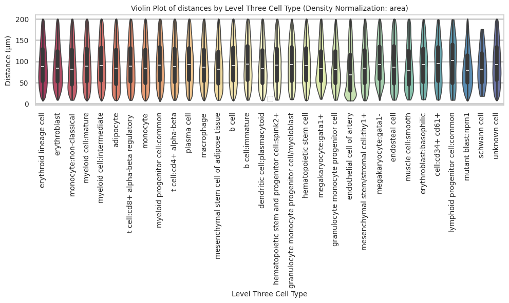
plot_distance_distribution_boxplots_by_region(df_all_edges_with_cell_type_level, cell_type_level, os.path.join(basepath, figures_output_dir))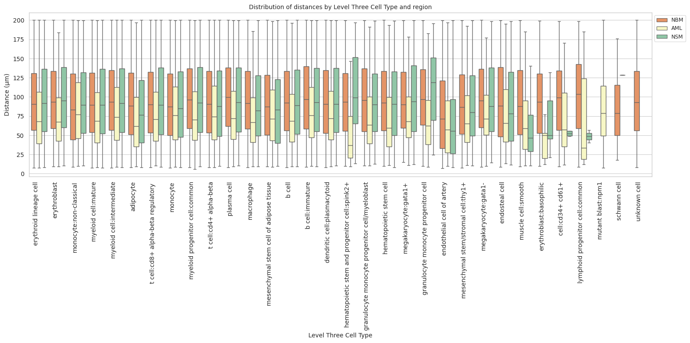
plot_distance_distribution_heatmap(df_all_edges_with_cell_type_level, cell_type_level, os.path.join(basepath, figures_output_dir))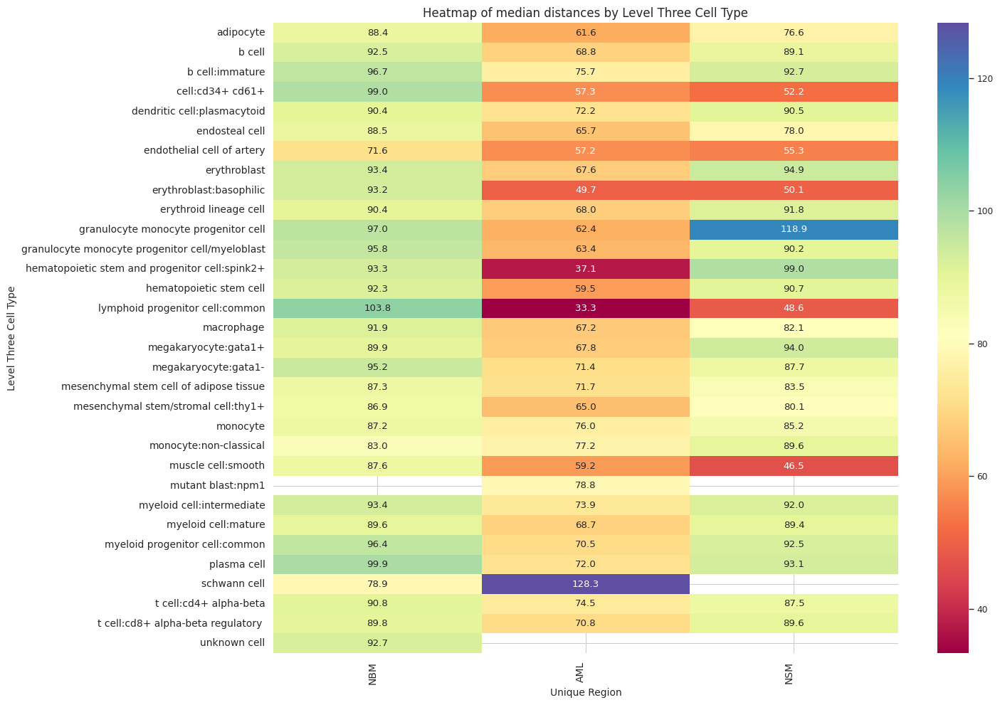
plot_violin_plots_all_regions(df_all_edges_with_cell_type_level, cell_type_level, os.path.join(basepath, figures_output_dir), density_norm="count") # Or, density_norm="count" or "area" based on preference.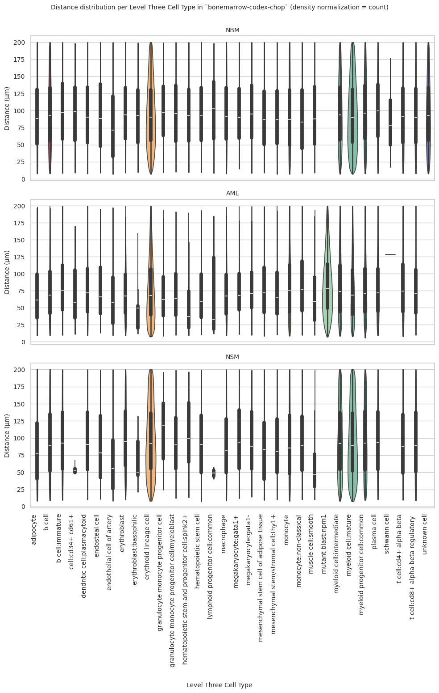